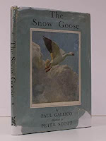
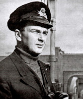
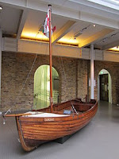
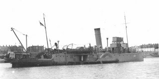
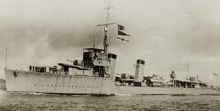
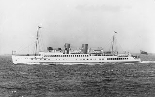
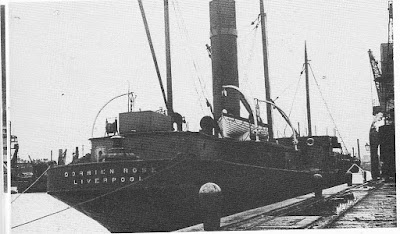

 |
| The Snow Goose 1946 |
{kind=link}
For me, as a 1950s child, the story was accepted as truth and the most significant version was the
book published in December 1946, with illustrations by Peter Scott. (I'm faintly shocked that there could be any others.) Our copy belonged
to my mother but I appropriated it as soon as I could and have always treasured
it. I never actually asked her whether she minded me removing it to my shelves -- or indeed how she felt about the book. One of her older brothers was with the British Expeditionary Force and was there on the beaches, waiting for rescue. She never told us that until much later - when she couldn't suppress the past any more.
 |
| Lt Cmdr Peter Scott Coastal Forces Museum |
{kind=link}
Scott’s connection with The Snow Goose was much closer than merely acting as
its illustrator. (I find it hard to remember that he wasn't the author.) Paul Gallico was a friend, of sorts, and had based significant details of
the story on Scott’s pre-war lighthouse home at the mouth of the river Nene in
South Lincolnshire. He’d also lifted Scott’s own account of 'Amabel', a tamed wild goose, which Scott had included in Wild Chorus (published 1938). Gallico was a
sportswriter as well as a novelist and had met Scott in an ice-skating
competition, then again at the summer Olympics 1936 where Scott won sailing bronze. There was also a tri-partite friendship with the 1936 Olympic
gold-medal winning yachtsman Chris Broadbent (a Norfolk friend of Scott’s also
serving with RNVR from September 1939).
The Snow Goose’s central character
Philip Rhayader is a painter and a lover of wild geese, living in a lighthouse.
Rhayadar is a lonely man with a misshapen body (this could well be a private
joke against the good looking and sociable Scott). When news of the stranded
British Army reaches Chelmbury (nearest town to the fictional lighthouse) ‘every
tug and fishing boat or power launch that could propel itself was heading across
the North Sea to haul men off the beaches to the transports and destroyers that
could not reach the shallows’ (SG p 35) Rhayader has only a small clinker-built
sailing dinghy but ‘For once – for once I can be a man and play my part.’ When
my mother, post-war, bought her first small sailing yacht, she instantly
renamed her Snow Goose and the waters round the UK are full of similar tributes.
Rhayader’s fictional dinghy is almost identical to Tamzine, the IWM exhibit of
the smallest of the Dunkirk Little Ships – though he sails her to Dunkirk alone from Essex and Tamzine was towed from Kent.
 |
| Tamzine Imperial War Museum |
{kind=link}
‘ “Coo did she go up! She burned
before she sank an’ the smoke a’ the stink came driftin’ inshore, all yellow
an’ black, an’ out of it comes this bloomin’ goose, circlin’ around us trapped on
the beach. An’ then around the bend ’e comes in a bloody little sailing dinghy,
sailing long as cool as you please, like a bloomin’ toff out for a pleasure spin
on a Sunday hafternoon at ’Enley.”
“Oo comes?” inquired a civilian.
“Im! ‘Im
that saved the lot of us…”’
Rhayader sails them out seven at a time to the fictional Kentish Maid, ‘a ruddy hexcursion scow wot Hi’ve taken
many a trip on out to Margate in the summer, for two and six.’
‘Hi don’t
know ’ow many trips ’e made but ‘im an’ a nobby Thames Yacht club motor boat an’
a big lifeboat from Poole that come along brought off all of us there was on
that particular stretch of hell, without the loss of a man. We sailed when the
last man was off, an’ there was more than seven hunder’ of us haboard a boat
built to take two hunder’.
 |
| Medway Queen Medway Queen Preservation Society |
{kind=link}
Peter Scott wasn't at Dunkirk. The start to his sea-going career on the destroyer HMS Broke, had been delayed by bouts of illness, sore throat, high fever, debilitating sea-sickness, jaundice. He had seen his companions in the RNVR training courses go off without him, had missed involvement in the Norwegian campaign then, when the BEF was retreating to Dunkirk, hard-working HMS Broke was in Devonport dockyard undergoing a refit. Scott had only just arrived: 'I remember the awful impatience of those hot days of early summer because Broke remained in the dockyard until after the fall of Dunkirk and I had to remain with her.' (Eye of the Wind)
 |
| HMS Broke Wrecksite.eu |
{kind=link}
The Snow Goose will never quite lose its magic yet the more I burrow around discovering true stories of Dunkirk the more moved and impressed I feel. I had thought little of the SS Dorrien Rose except I felt grateful to her for conveying Mum's brother safely home. And I quite liked her for being mundane -- not vulnerable & appealing like Tamzine nor antique & spectacular like Medway Queen or warlike and effective like HMS Broke. Just an ordinary cargo vessel doing her job.
Except that I now discover, on the morning of May 28th SS Dorrien Star had been sent to deliver stores to Dunkirk. I'm not sure she was intended as part of the people-carrying fleet. In the early hours of the morning she met the cross-Channel excursion ship Queen of the Channel, loaded with 950 troops, bombed and sinking. With consummate seamanship the master and crew of SS Dorrien Rose managed to manoeuvre her bow-to-bow with Queen of the Channel and hold her there while all 950 men climbed across to safety in just over half an hour. Two days later she went back once again picked up my Uncle Pat and six hundred others of the Queen's Own Royal West Kent regiment. They'd been engaged with the enemy or on the march for nine days with little food or sleep, they'd been were strafed by machine guns whilst they waited on the beach. Two of my uncle's companions had been killed beside him. All they asked of SS Dorrien Rose was that she should get them home. Which she did
 |
| The Queen of the Channel 1935-1940 |
{kind=link}
 |
| SS Dorrien Rose from The Ships that Saved an Army by Russell Plummer |
{kind=link}